Dear friends,
Mark and I wish you the best for the coming year. Here are a few remembrances of 2017...
While much of our lives went along as usual, one event of 2017 stands out as particularly awe-inspiring: The total eclipse of the sun on August 21. Although our house was in the path of totality, and we'd hoped to watch the eclipse from there or nearby, the weather did not cooperate, and Lincoln was cloudy that day. So Mark and I went on a marathon 1200 mile trek over two days, in order to watch the total eclipse on a cloudless day, at high elevation and low humidity, on a hilltop in the countryside near Douglas, Wyoming. The view and the experience were awesome, in the literal sense of the word - we were very much in awe. Some of what we experienced we had expected - seeing the corona, experiencing a 10+ degree temperature drop during the eclipse, noticing the crickets becoming silent during totality. But some we had not known ahead of time - seeing pink sunset colors on the horizon all (360 degrees) around, and seeing our shadows become very blurry (the latter is visible in one of the pictures below - the fuzziness of the edge of the shadow is not because the camera was out of focus!). Mark and I are already looking forward to the eclipse of 2024. Here are a few pictures of the eclipse, and of the antelope nearby on our hilltop; you can see more of Mark's pictures at www.math.unl.edu/~mbrittenham2/2017_Total_Solar_Eclipse/index.html.
| 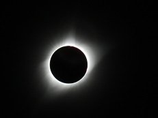 | 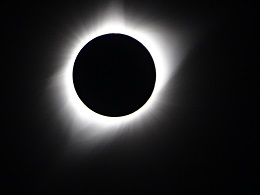 | |
| 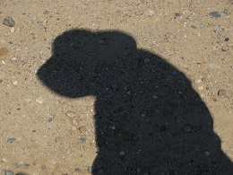 | 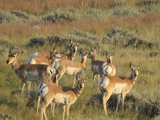 |
Another highlight of the year was that we had lots of visitors here in Lincoln: Mark's brother Paul and his family (on their way to Wyoming to see the eclipse, too), friends from grad school Gabi and Jin-Yi (we got to see the snow goose migration with them), and several coauthors and friends (Sarah and Derek (from England) and Yago (from Spain)). We enjoy visitors very much!
At UNL our lives have changed a bit because the postdoc working with us for the past few years (Tim) moved to a new tenure-track position this fall, and one of our doctoral students (Maranda) graduated in May. But we're working hard at keeping close contact with them and all of our former students and postdocs (including seeing Zoran and Ashley in Texas, and Anisah here in Lincoln, this year), and it's neat to have an increasing extended academic family.
We continue to do a lot of walking/hiking in various places. We took our favorite hike of 2017 on January 3 - and then repeated it on January 5! - in Death Valley national park. This was a walk along several miles of unused 4WD road in the Funeral Mountains, with great views of the valley, and then up the mountainside to a ghost town (Keane Spring) and down Monarch canyon to a hundred-year-old gold mine ruin. We also enjoyed repeating several hikes from previous visits to DVNP, including on the salt flats at the lowest point in the US.
| 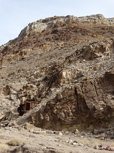 | 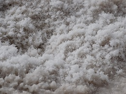 | 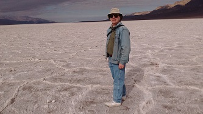 |
We also continue birdwatching, and this year we had an unusual number (4) of additions to the list of birds we've seen in our neighborhood (within four blocks of our house), bringing the total up to 44. (For those of you who are interested, we added spotted towhee, least flycatcher, snow goose, and common tern.) Mark took the picture of the pied-billed grebe below in our neighborhood, and the sandhill crane migration in Nebraska (on the Platte River). We also saw the long-billed curlew in the Tijuana River estuary while visiting with our friend Melanie and her family.
| 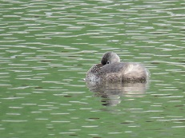 | 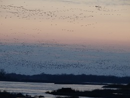 | 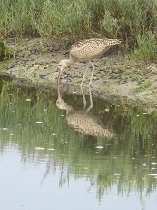 |
Here are a few pictures from other events/excursions, too: African penguins from a visit to the San Diego zoo with our friends Megan and Mike and their family, sunset over Zaragoza, Spain (during a visit to my coauthor Conchita),
| 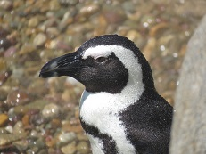 | 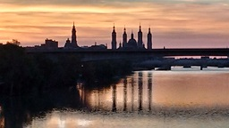 |
| 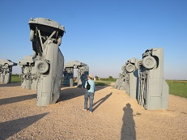 |
Happy holidays and new year to all of you! Mark and I hope you've had a good year in 2017, wish you the very best for 2018.
Susan